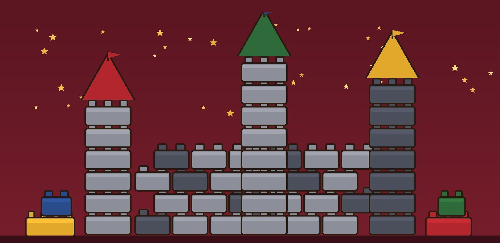

Welke LEGO Harry Potter set kopen? Zes keuzes per leeftijd
Dat hangt af van één ding: wil de fan ermee spelen, of wil hij bouwen en neerzetten? Voor een kind van zeven tot twaalf jaar kies je een speelset, zoals de Vliegende Ford Anglia of de Collectebus. Voor een volwassen fan een van de grote bouwsets, zoals Kasteel Zweinstein en terrein. Hieronder zes sets naast elkaar, met wat erin zit volgens LEGO, uit welke film het komt en voor wie elke set bedoeld is.

In het kort
Het korte antwoord: voor een kind van zeven is de Vliegende Ford Anglia de veiligste keuze, voor een kind van acht tot twaalf de Collectebus, en voor een volwassen fan Kasteel Zweinstein en terrein. Is het voor in de schoen, neem dan de Sorteerhoedceremonie. Klik op een naam om naar de uitleg te springen; de prijzen komen live van bol.
De zes sets naast elkaar
Setnummer, leeftijd, aantal stenen en wat erin zit zoals LEGO het zelf opgeeft op de productpagina van elke set, nagekeken op 25 november 2026.
| Set | Setnummer | Leeftijd volgens LEGO | Stenen | Uit welke film | Wat erin zit |
|---|---|---|---|---|---|
| Kasteel Zweinstein: Sorteerhoedceremonie | 76460 | 7+ | 124 | De Steen der Wijzen | Professor Anderling en drie leerlingen, een sorteerwiel en de Sorteerhoed |
| Vliegende Ford Anglia | 76424 | 7+ | 165 | De Geheime Kamer | Harry, Ron, uil Hedwig en rat Schurfie in de auto van de Wemels |
| Dobby de vrije elf | 76469 | 8+ | 379 | De Geheime Kamer | Een groot beweegbaar figuur van Dobby, om te bouwen tot Knijster |
| Collectebus avontuur | 76446 | 8+ | 499 | De Gevangene van Azkaban | De bus met drie verdiepingen, vier minifiguren en een figuur van Sluipvoet |
| Kasteel Zweinstein en terrein | 76419 | 18+ | 2660 | De hele reeks | Het kasteel met het terrein eromheen, als model om neer te zetten |
| De Wegisweg tovenaarswinkels | 76444 | 18+ | 2750 | De hele reeks | De winkelstraat met twaalf microfiguren en een kleine Collectebus |
Twee dingen vallen op als je ze zo naast elkaar zet. Er zit een harde knip tussen de sets voor kinderen en die voor volwassenen: van 499 stenen naar ruim 2.600, en van acht jaar naar achttien. En de vier sets voor kinderen komen alle vier uit de eerste drie films, de films die volgens onze Harry Potter-pagina geschikt zijn vanaf ongeveer negen jaar.
Waar het verschil in zit
Spelen of neerzetten. De Sorteerhoed, de Ford Anglia en de Collectebus zijn speelgoed: er zitten minifiguren in die je kunt vastpakken, en er gebeurt iets, een wiel draait, een auto vliegt, een bus gaat open. Kasteel Zweinstein en de Wegisweg zijn modellen. Daar staan microfiguren in van een paar millimeter hoog, en het plezier zit in het bouwen en in het kijken. Dobby zit ertussen: een figuur om te bouwen en neer te zetten, maar ook om te laten zitten, staan of lopen.
Welke film het kind kent. Een set is leuker als het kind de scène herkent. De Sorteerhoed komt uit de eerste film, de Ford Anglia en Dobby uit de tweede, de Collectebus uit de derde. Heeft het kind nog geen film gezien, begin dan bij de eerste.
Hoe lang er gebouwd wordt. De Sorteerhoed en de Ford Anglia zijn in een middag af. De Collectebus en Dobby vragen meer tijd en meer geduld. De twee grote sets zijn een project van dagen of weken, en daarom zet LEGO ze op achttien jaar en ouder: niet omdat ze gevaarlijk zijn, maar omdat ze zijn gemaakt voor wie lang wil bouwen.
Onze keuzes
LEGO Harry Potter Kasteel Zweinstein: Sorteerhoedceremonie (76460)
De avond uit de eerste film waarop nieuwe leerlingen bij een afdeling worden ingedeeld. Volgens LEGO zitten er professor Anderling en drie leerlingen in, elk met een toverstok, plus de Sorteerhoed, een sorteerwiel waaraan je draait om een afdeling te kiezen, een puntenmeter van de vier afdelingen en de katpatronus van Anderling. Het is een set voor het jubileum van 25 jaar Harry Potter-films. Klein, maar er gebeurt meteen iets mee, en dat maakt hem tot een goed schoencadeau.
- Klein genoeg voor in de schoen of in een surprise
- Het sorteerwiel maakt er meteen een spelletje van
- Vier minifiguren, meer dan in de Ford Anglia
- Weinig bouwwerk: voor een fan van tien snel klaar
- Geen Harry, Ron of Hermelien bij naam: het zijn leerlingen
- Nog niet veel beoordelingen bij bol
LEGO Harry Potter Vliegende Ford Anglia (76424)
De auto van de familie Wemel waarmee Harry en Ron in de tweede film naar Zweinstein vliegen. Volgens LEGO zitten Harry, Ron, uil Hedwig en rat Schurfie erbij, kan het dak eraf zodat de figuren makkelijk in de auto passen, en gaan de toverstokken, de koffer en Schurfie in de kofferbak. Van de zes sets hier heeft deze bij bol de meeste beoordelingen na het grote kasteel, en ze zijn hoog.
- Harry en Ron samen in één kleine set
- Een vliegende auto is meteen speelgoed
- Veel beoordelingen bij bol, en die zijn goed
- In een middag gebouwd
- Geen Hermelien
- Wie de tweede film niet kent, mist de grap van de auto
LEGO Harry Potter Dobby de vrije elf (76469)
Geen speelset met minifiguren, maar één groot beweegbaar figuur van Dobby, de huiself. Volgens LEGO zet je hem zittend, staand of lopend neer, en bouw je hem met dezelfde stenen om tot Knijster, de huiself uit de latere boeken. Erbij zitten onder meer het dagboek van Marten Vilijn met een stoffen sok erin: het moment waarop Dobby vrij wordt.
- Twee figuren in één doos: Dobby of Knijster
- Een echte bouwklus, maar geen project van dagen
- Staat na afloop mooi op de plank
- Geen minifiguren om mee te spelen
- Knijster kent een kind pas uit de latere delen
- Nog weinig beoordelingen bij bol
LEGO Harry Potter Collectebus avontuur (76446)
De paarse bus met drie verdiepingen uit de derde film, Harry Potter en de Gevangene van Azkaban. Volgens LEGO gaan het dak en de verdiepingen open, schuiven de bedden heen en weer en zwaait de kroonluchter als de bus rijdt. Er zitten vier minifiguren in plus een figuur van Sluipvoet, en een lantaarnpaal met bank om de scène te spelen voordat de bus stopt. In Harry's koffer zit een brief van Zweinstein.
- Het meeste speelwerk van de zes: binnen en buiten
- Het meeste bouwwerk van de sets voor kinderen
- Goed beoordeeld bij bol, door veel kopers
- De derde film is spannender dan de eerste twee
- Neemt ruimte in, ook na het spelen
- Duurder dan de kleine sets
LEGO Harry Potter Kasteel Zweinstein en terrein (76419)
Volgens LEGO het eerste model van het kasteel samen met het terrein eromheen. Geen speelgoed maar een model om te bouwen en neer te zetten, en daarom het cadeau voor de volwassen fan die de boeken kent en graag een paar avonden bouwt. Bij bol de set met de meeste beoordelingen in deze gids, en ze zijn hoog.
- Het hele kasteel in één model
- Lang bouwplezier
- De meeste beoordelingen van de zes, en die zijn goed
- Niet om mee te spelen
- LEGO zet hem op achttien jaar en ouder
- Een groot cadeau, ook in prijs
LEGO Harry Potter De Wegisweg tovenaarswinkels (76444)
De winkelstraat uit de boeken als model. Volgens LEGO zet je hem neer als straat met twee kanten, vouw je hem open tot één lange rij gebouwen of haal je hem in modules uit elkaar, met binnenin verrassingen in de winkels. Er staan twaalf microfiguren in, onder wie Harry, Ginny Wemel en meneer Odius, en een kleine Collectebus.
- Het meeste bouwwerk van de zes
- Drie manieren om hem neer te zetten
- Veel plekken die een lezer van de boeken herkent
- Microfiguren, geen minifiguren: niet om mee te spelen
- De duurste van de zes
- LEGO zet hem op achttien jaar en ouder
Welke kies je voor wie
Een kind van zeven, net begonnen met de films. De Vliegende Ford Anglia: Harry en Ron in een auto die vliegt, en in een middag af. Is het budget klein of is het voor in de schoen, dan de Sorteerhoedceremonie. Bij welke afdeling het kind zelf zou horen, lees je in de vier afdelingen van Zweinstein.
Acht tot twaalf jaar, speelt graag. De Collectebus. Ken je kind de derde film nog niet, kijk die dan eerst samen, of kies de Ford Anglia.
Acht tot twaalf jaar, bouwt liever dan dat het speelt. Dobby. Een figuur om te bouwen, neer te zetten en om te bouwen tot Knijster.
Een tiener of volwassene die de boeken kent. Kasteel Zweinstein en terrein. Wil hij of zij echt iets groots in de kast, dan de Wegisweg. LEGO zet allebei op achttien jaar en ouder; een tiener die al veel heeft gebouwd, kan het, maar dat is jouw afweging.
Je zocht eigenlijk een adventskalender. LEGO heeft er dit jaar geen van Harry Potter, en de oudere edities zijn na 1 december te laat. Wat er nog ligt, staat in LEGO Harry Potter adventskalender 2026; voor Kerst is een van de sets hierboven de betere keuze.
Wat wij niet zouden kopen
Een grote verzamelset voor een kind van acht. De grote Kasteel Zweinstein (71043) met ruim zesduizend stenen en de Zweinstein Express als verzameleditie zijn modellen voor volwassenen. Een kind kan er niet mee spelen, en het bouwen duurt weken. Voor dat geld heb je de Collectebus en nog geld over.
Een set die uit de handel is, voor de hoofdprijs. De vorige Wegisweg (75978) ligt bij bol nog bij een verkoper, voor een veelvoud van wat de nieuwe Wegisweg kost. Wie geen verzamelaar is, koopt de nieuwe.
Een set uit de laatste films voor een jonge fan. Een set als Hagrid en Harry's Ligusterlaan ontsnapping (76459) komt uit De Relieken van de Dood, met twee Dooddoeners erbij. De latere films zijn donkerder en hebben vaak een advies van twaalf jaar; voor een kind van zeven past een scène uit de eerste films beter.
Veelgestelde vragen
Welke LEGO Harry Potter set is het best voor een kind van 7? De Vliegende Ford Anglia (76424) of de Sorteerhoedceremonie (76460). LEGO zet ze allebei op zeven jaar en ouder, ze zijn in een middag gebouwd en er zitten minifiguren in om mee te spelen.
Welke LEGO Harry Potter sets zijn voor volwassenen? In deze gids zijn dat Kasteel Zweinstein en terrein (76419) en De Wegisweg tovenaarswinkels (76444). LEGO zet ze op achttien jaar en ouder; het zijn modellen om te bouwen en neer te zetten, niet om mee te spelen.
In welke LEGO Harry Potter set zitten Harry en Ron? In de Vliegende Ford Anglia (76424), samen met uil Hedwig en rat Schurfie.
Is er een LEGO Harry Potter adventskalender 2026? Nee. De LEGO-adventskalenders van 2026 zijn Marvel, Star Wars, City, Friends en Disney Princess. Oudere Harry Potter-edities liggen nog bij bol; welke dat zijn, lees je in onze gids over de Harry Potter-adventskalender.
Uit welke film komt de LEGO Collectebus? Uit Harry Potter en de Gevangene van Azkaban, de derde film. LEGO zet de set op acht jaar en ouder.
Hoe wij deze zes gekozen hebben
Wij zochten bij bol naar LEGO Harry Potter-sets die nu leverbaar zijn en kozen er zes die samen elke leeftijd en elk budget dekken: van het goedkoopste kleine cadeau tot het duurste pronkstuk. De feiten over leeftijd, stenen en inhoud komen van de productpagina's van LEGO zelf, niet van een winkel, nagekeken op 25 november 2026. Alle zes zijn op die dag stuk voor stuk nagemeten op prijs en levertijd bij bol. Sets van verkopers die alleen een veelvoud van de adviesprijs vragen, hebben we laten liggen.
Over sterren: een hoge score uit een handvol beoordelingen zegt weinig. Het aantal staat in elk blok, zodat je dat zelf kunt wegen.
Via de knoppen naar bol verdienen wij een kleine commissie. Dat verandert niets aan wat hier staat: valt een set bij bol weg, dan verdwijnt het blok inclusief onze tekst, zodat er nooit een aanbeveling blijft staan bij iets wat er niet meer is.
💡 Handig om te weten
Het setnummer staat op elke LEGO-doos. Zoek je een set die je hier ziet, zoek dan op dat nummer: zo weet je zeker dat je niet een oudere versie met dezelfde naam koopt.
Meer Harry Potter op Heldenshop: alles over Harry Potter, de vier afdelingen van Zweinstein en toveren als Harry Potter. Zoek je LEGO met superhelden, kijk dan bij de leukste LEGO sets voor superheldenfans.